Nature
"Step into the enchanting embrace of nature's abundant
tapestry, where every stroke of color,
every whisper of wind, and every rustle of leaves weaves
a story of timeless wonder. In this sanctuary of serenity,
let your weary heart find solace, as the tranquil rhythms
of nature's symphony gently caress your spirit, rejuvenating
and inspiring you in ways words fail to capture.
| 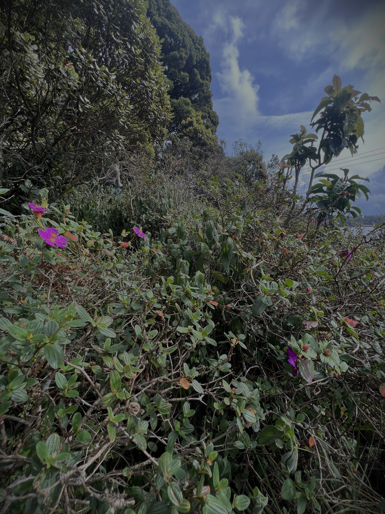 | 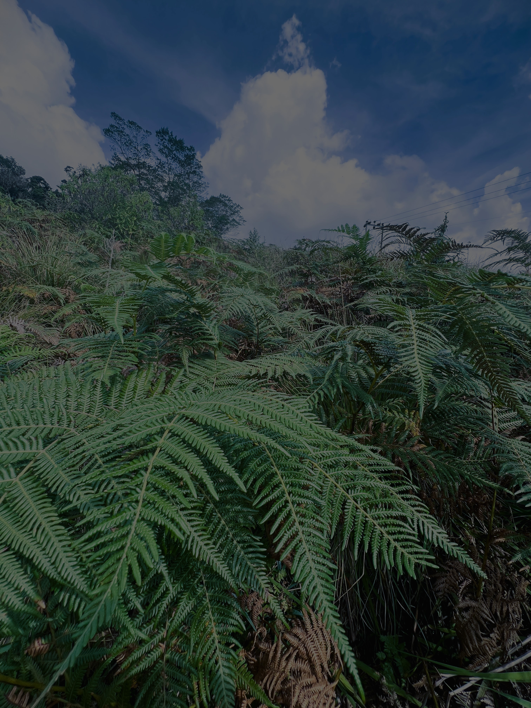 | 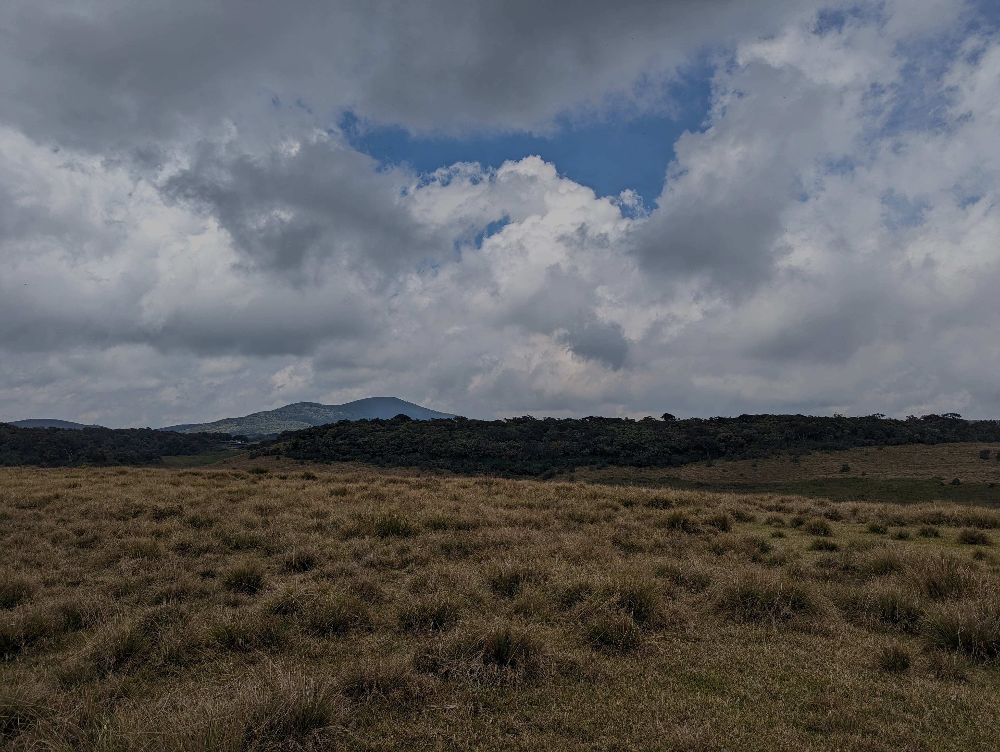 | 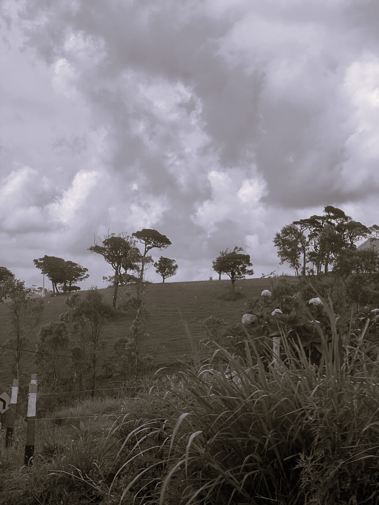 |
Lose yourself in the verdant embrace of lush forests, where
sunlight filters through the canopy, painting an ethereal
mosaic of dappled hues upon the forest floor. Wade into
the gentle embrace of crystal-clear rivers, their melodious
melodies guiding you to hidden corners of tranquility,
where time stands still and worries fade away.
| 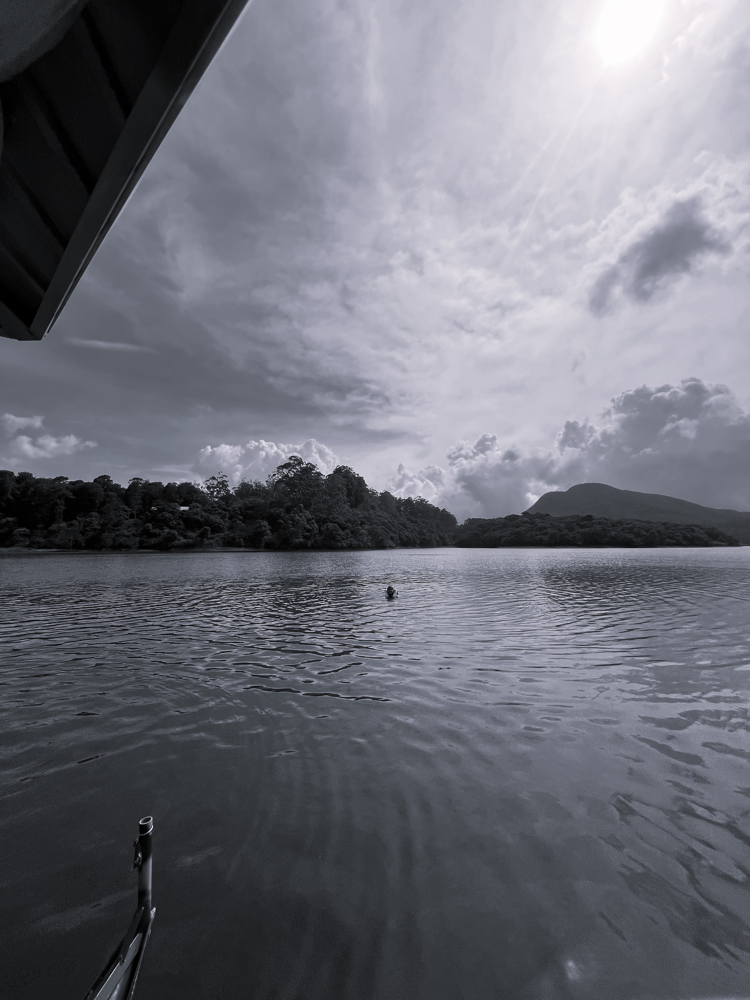 | 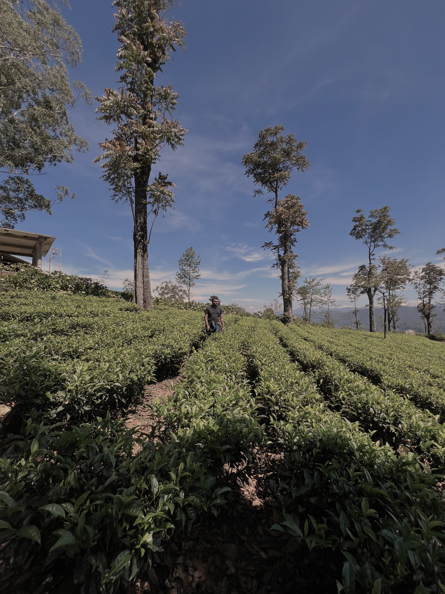 | 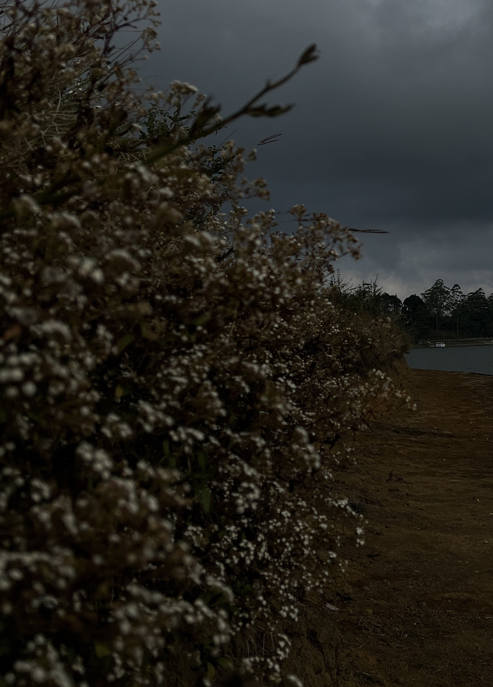 | 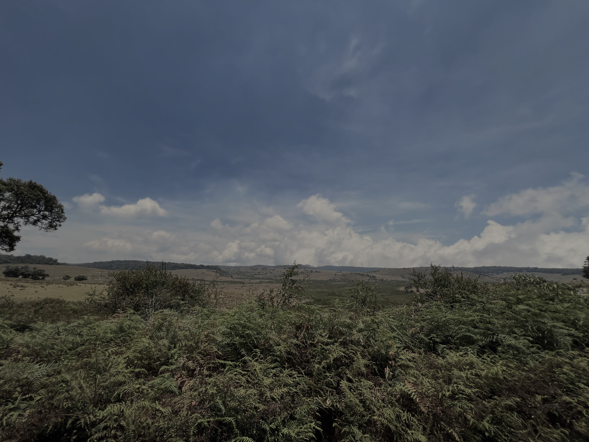 |
Traverse the rugged majesty of majestic mountains, their peaks
reaching for the heavens, reminding us of our own capacity
for resilience and greatness. As you immerse yourself in
the grandeur of nature's canvas, breathe in the crisp air,
infused with the scents of earth and life, and feel a deep
sense of connection the very essence of existence. Nature,
with its unyielding beauty and boundless grace, teaches us
humility, reminding us that we are but a small part of a
grander design, and that true wealth lies not in material
possessions, but in the richness of experiences and the
connections we forge with the world around us.
|
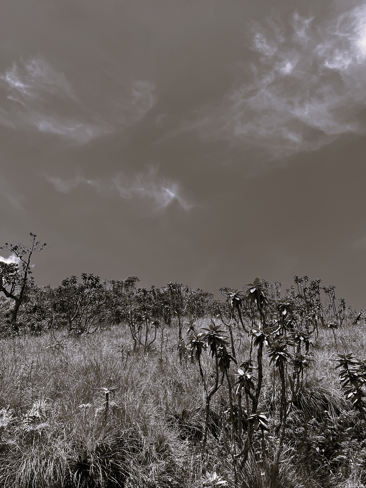 | 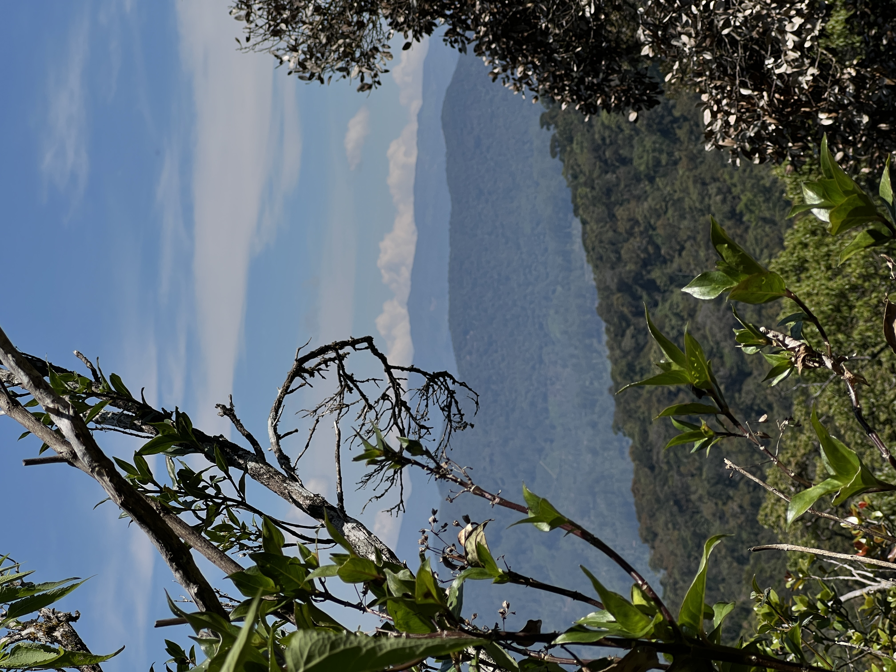 | |
So, let nature's embrace be your
sanctuary, your refuge, and your guide, as you embark on a journey
of self-discovery, marveling at the miracles that
unfold with every step, and finding solace in the embrace of the wild."
| 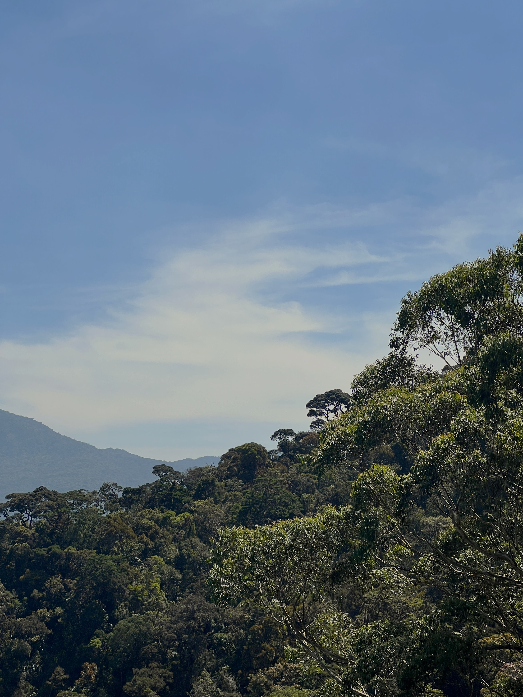 | 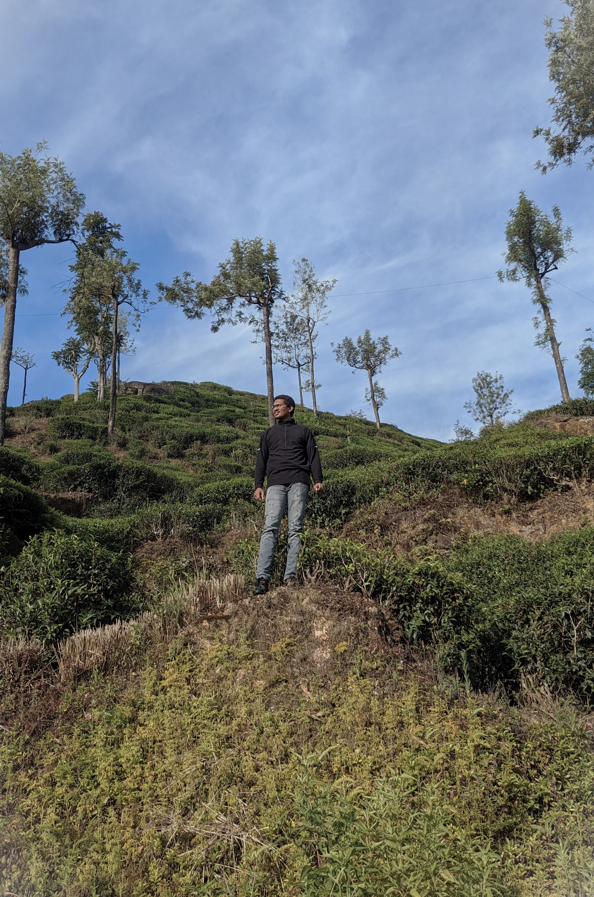 | 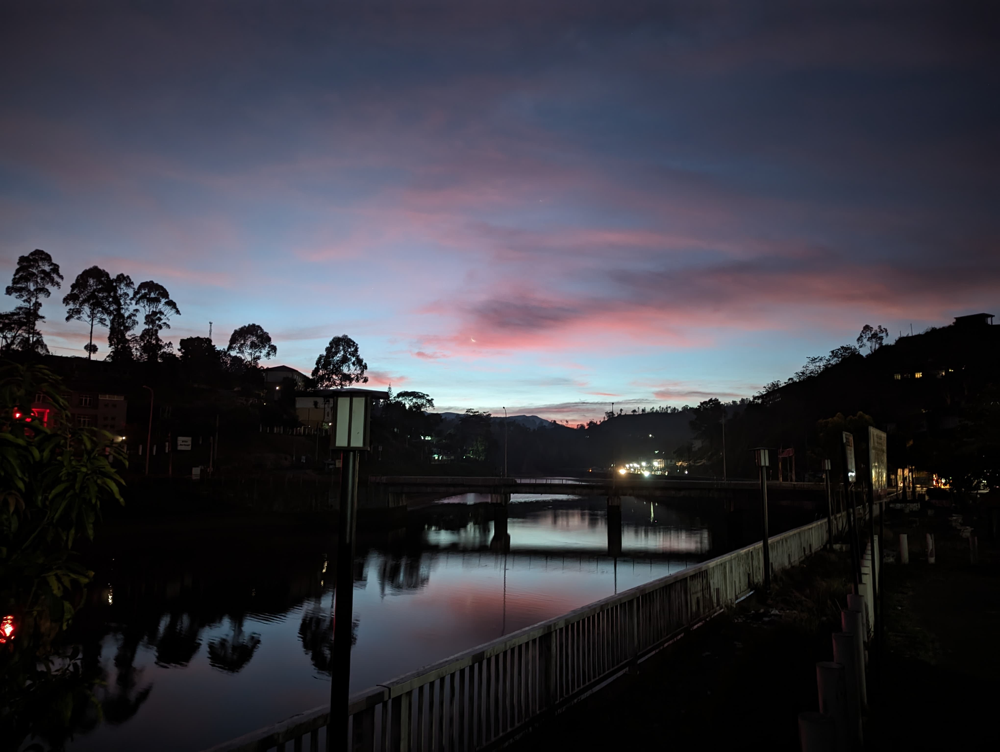 | 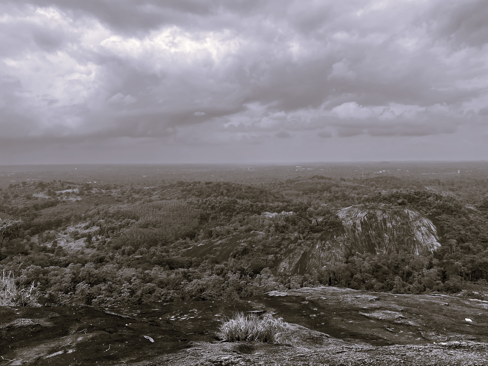 |